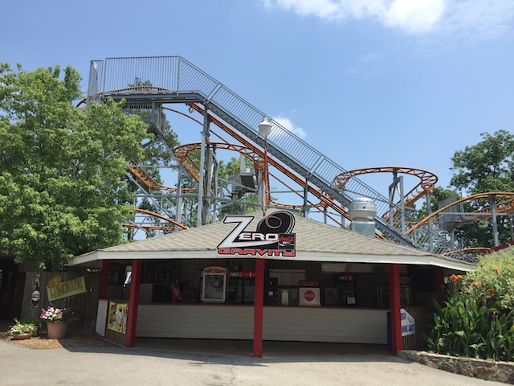

| |
Wild Lightning Review

We're here at Lake Winnie, where we'll reveiwing Wild Lightning. The parks Wild Mouse. After getting in the seats and pulling down the lap bar, you go up the lifthill. Up, up, and up you go. Near the top, you can get a nice shot of the switchbacks as well as a nice view of Lake Winnie. Not the park. I mean, the actual Lake Winnie. Then once we get to the top, you get whipped around a turn and set into the switchbacks. The switchbacks are...bad. I'm not sure how this ride does it, but it manages to be both slow and brutal at the same time. It's amazing. Not only does it feel like it crawls through the switchbacks, but it also feels like it's like a square, so you're just going through these right angles. It doesn't whip you around the turns. And yet, it doesn't just roll through them. It sort of clunks through them. So you get the worst of both worlds, where it's both dull and uncomfortable. Ugh. This really blows. Then after going through the set of switchbacks, you go through some trim brakes before the big drop. Meh, it's not like this really matters that much. We weren't going super fast before them. It's about the same afterwards. Then you turnaround only to go through the rides biggest drop. While it's not a very big drop. It's still fun. Definetly the most fun part of the ride. You then rise up and head around another Wild Mouse turn and, yeah. You clunk through this part of the ride. We then dip down, pop up, and go through another crazy turn. OK. Not a crazy turn. But a clunky and awkward turn. We then head through a itty bitty bump, that...honestly, it feels like a pothole more than anything. We then clunk through one final Wild Mouse turn and down another dip before slamming into the brake run. I know there's not much thought that goes into this ride. And for understandable reasons. But even by Wild Mouse standards, this is sh*t. I know it feels weird and pointless to say this, but yeah. This is without a doubt, the worst Wild Mouse I have ever been on. Yes, it's even worse than Coast Rider with those HORRENDOUS shin guards. The only upside about this ride is...I like the view of Lake Winnie. So yeah. Screw this ride.
5/10
Location: Lake Winnie
Opened: 2001
Built by: L&T
Last Ridden: June 26, 2012
Wild Lightning Photos


Home
|